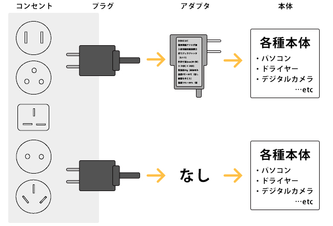
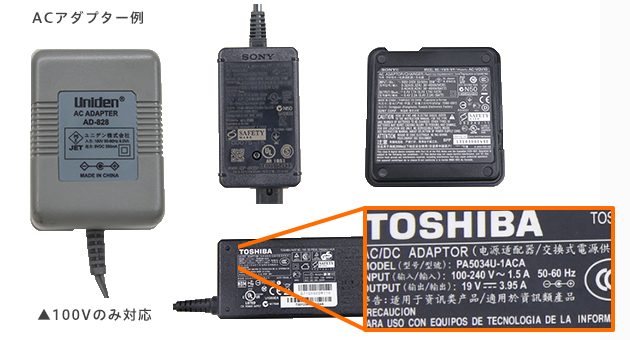

';
$header_obj->fncMenuHead_h1text = '電圧対応機器';
$header_obj->add_js_files='
';
$header_obj->add_css_files='';
$header_obj->display_header();
?>
';
$header_obj->fncMenuHead_h1text = '電圧対応機器';
$header_obj->add_js_files='
';
$header_obj->add_css_files='';
$header_obj->display_header();
?>
| STEP8 - おまけ手荷物 | はじめての ワーホリTOP |
STEP8 - おまけおみやげ |
海外の電化製品について
電化製品について
コンセントと家電の関係
電化製品は、充電タイプ・充電が必要ないタイプ共に、基本的にコンセントから電気の供給を受ける必要があります。
その中には、ACアダプターを間に挟むタイプと、そうでないタイプがあります。
日本国内ではType-Aのコンセントが使用されており、国内販売されている家電もそれに準じた仕様になっていますが、海外ではそれぞれの国に応じてコンセントの形や電圧などが様々なため、自身の行く国にあったものを使用する必要があります。

電圧対応機器の確認方法
一部の電化製品はプラグを変換するだけで現地でも利用を継続できる
デジタルカメラ、ノートPC、携帯電話などの一部の電化製品はプラグだけを変換すればそのまま海外でも使用可能なので充電器をチェックしてください。充電器に100-240V対応と記載してあれば留学先のジャックに合わせるだけで利用可能です。アメリカやカナダは差し込むだけで使用可能です。 
全世界対応電化製品を使う
湯沸し器、ドライヤー、ヘアアイロン、電子ジャーは全世界対応製品があるので国内で用意してから渡航するのも用意でしょう。留学先の電源差込口に合わせたものにして使用しましょう。滞在先だけでなく今後、海外旅行に出かける際も利用することができます。
※海外対応であっても、切り替えスイッチなどがある場合があるので注意！！
変圧器を使用する
海外対応変圧トランスを通せば日本製の電化製品も安全に利用できます。限度はありますが変圧器に電源タップを通して利用することも十分に可能です。安全な環境で日本の電化製品を利用することができます。小さなワット数であれば、変圧器を挟んでもOKです。
プラグがさせても使用するのは危険です
「入力AC100Vまで」と記載してあったら例え電源に差し込めても危険なので使用は控えてください。電化製品が破損するだけでなく火花が怪我や火事の原因になったり、器物破損した場合には賠償問題に発展する可能性があります。
どうしても100V対応のドライヤーを持って行きたい！とお思いの方もいらっしゃるかと思いますが、その場合には1500Wの変圧器が必要になります。安全な渡航生活のためにも、正しい使い方を心がけましょう。
電圧＆差し込みプラグ対応表
渡航先の電圧、電源差し込み口の質問が沢山よせられたので早見表にまとめました。滞在先に併せて用意してください。
※オーストラリアのコンセントは、３つ穴がありますが、基本的に使うのは２つの穴です。
| アジア | ||
|---|---|---|
| 香港 | 220V | TYPE-B |
| 韓国 | 110Vもしくは220V |
TYPE-A TYPE-C TYPE-SE |
| 台湾 | 110V | TYPE-A |
| オセアニア | ||
|---|---|---|
| オーストラリア | 240V | TYPE-O |
| ニュージーランド | 230-240V | TYPE-O |
| 北米 | ||
|---|---|---|
| カナダ | 120V | TYPE-A |
| アメリカ | 110-120V | TYPE-A |
| ヨーロッパ | ||
|---|---|---|
| イギリス | 240V |
TYPE-B TYPE-C |
| アイルランド | 230V | TYPE-C |
| フランス | 230V | TYPE-C |
| ドイツ | 230V | TYPE-C |
| デンマーク | 230V | TYPE-C |
| ノルウェー | 230V | TYPE-C |
はじめてのワーキング・ホリデー